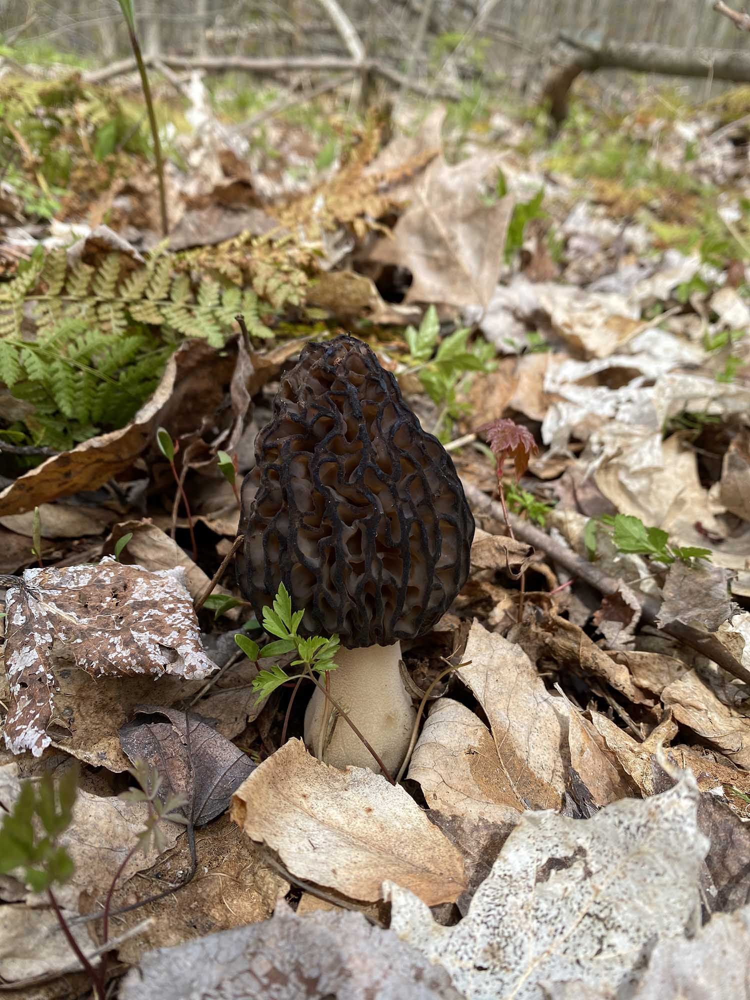
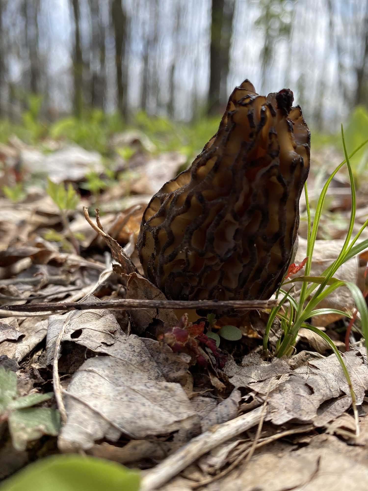
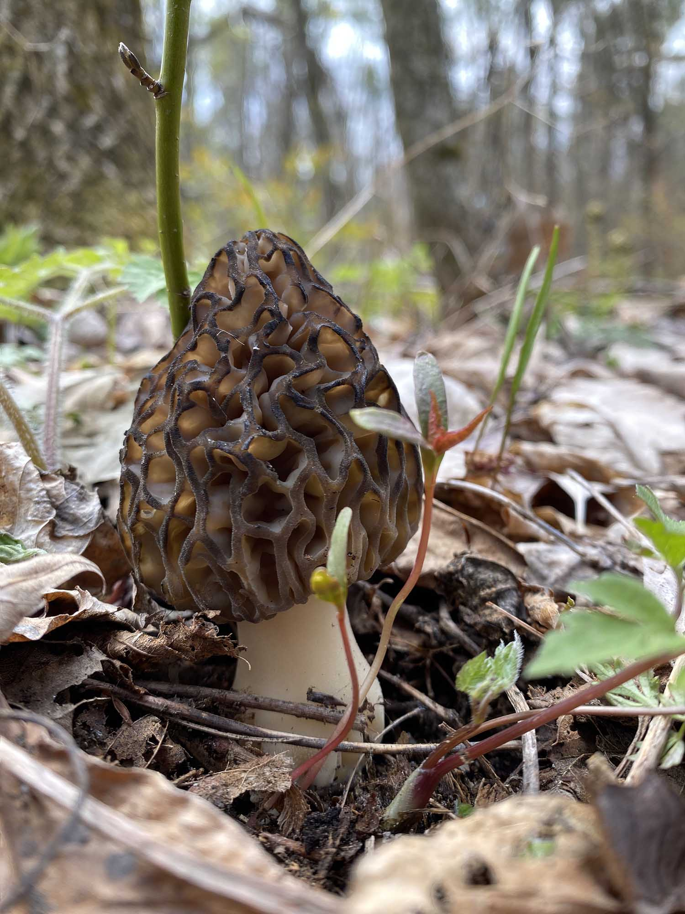
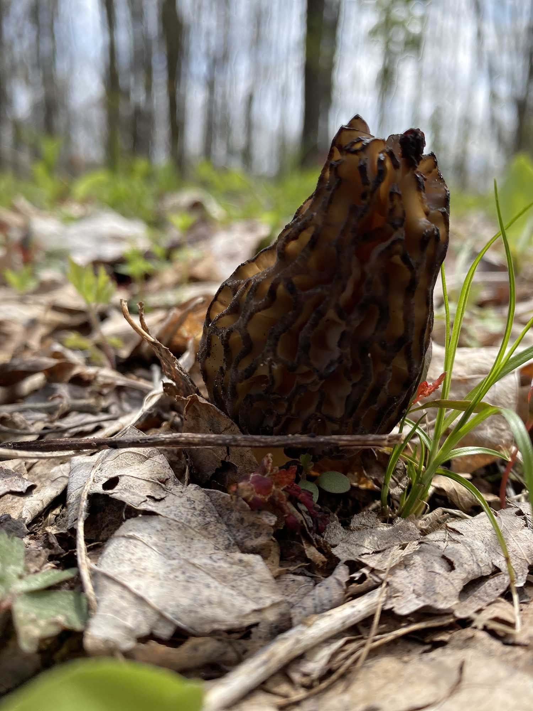
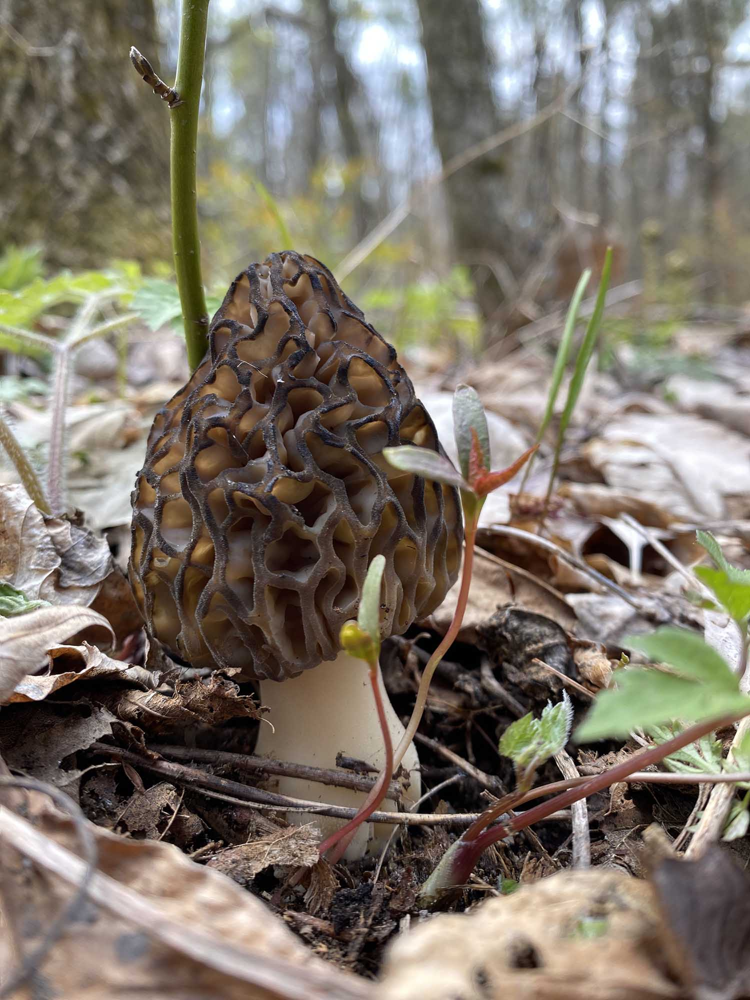

May 11, 2020
| Observation: | Last Observation: |
|---|---|
| First | — |
Found 10 individual mushrooms spread gregariously across a 8m x 10m area. On average mushrooms were about 1.5m apart, but ranges from 0.5m to 3m.
 



May 5, 2021
| Observation: | Last Observation: |
|---|---|
| Last | 360 days since first observation |